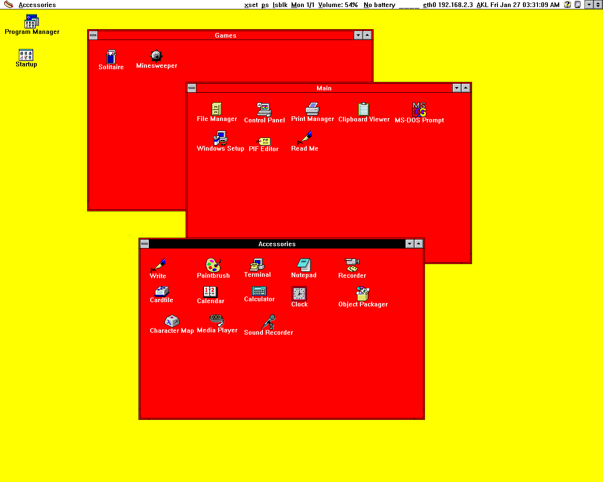
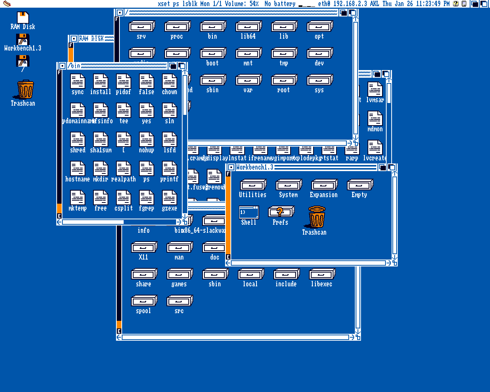
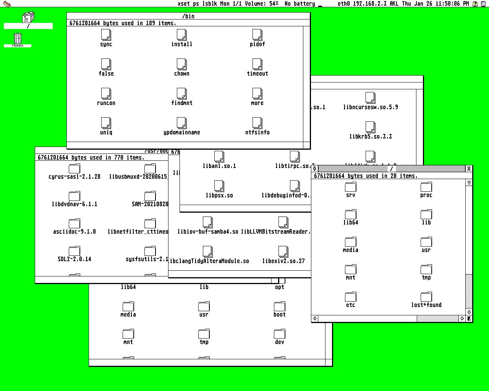
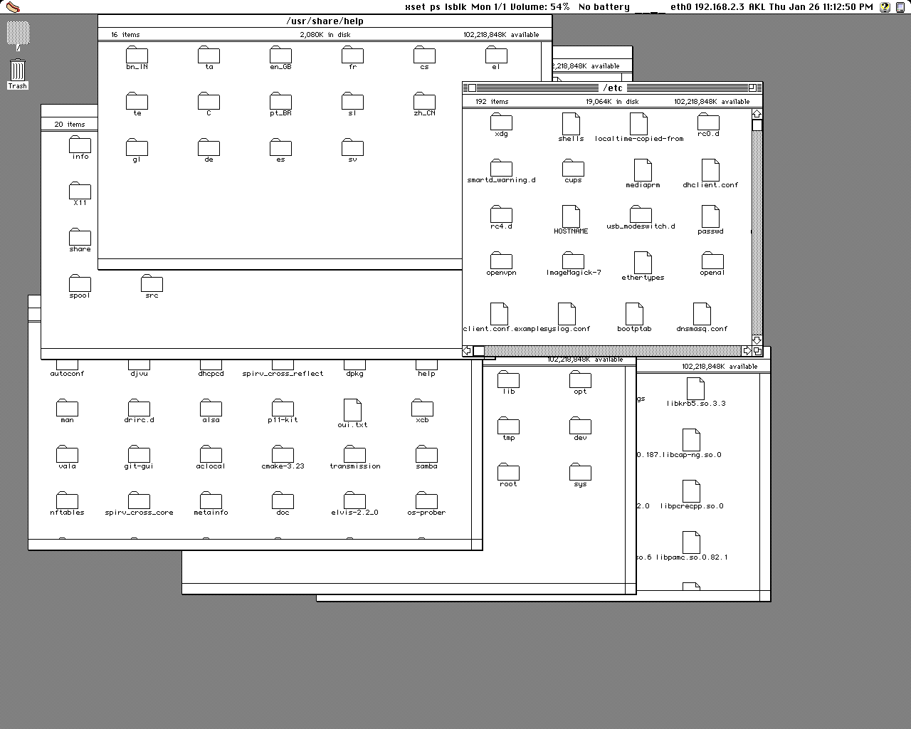
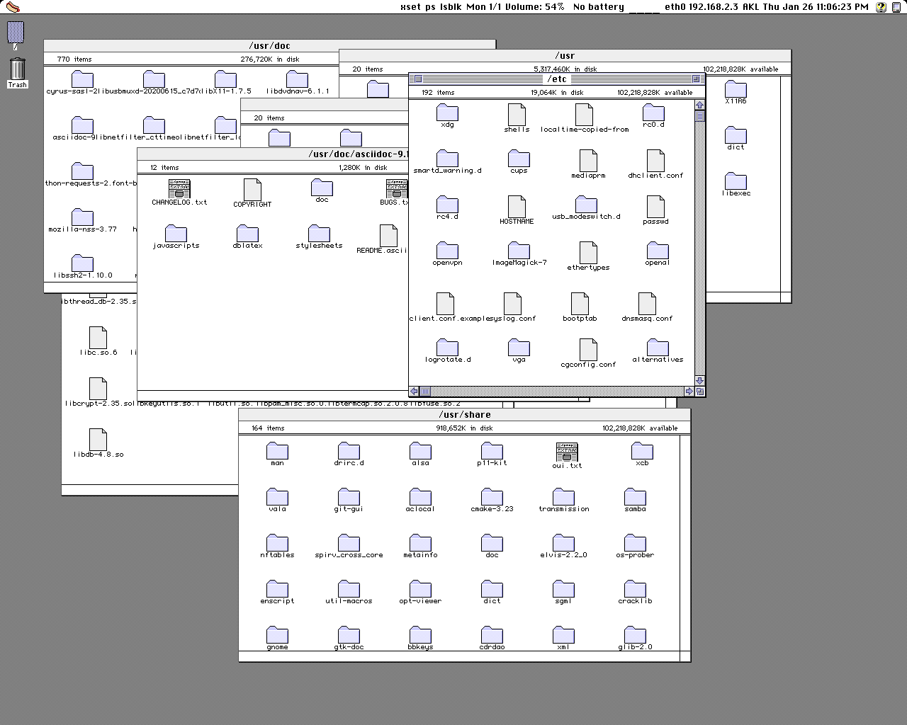
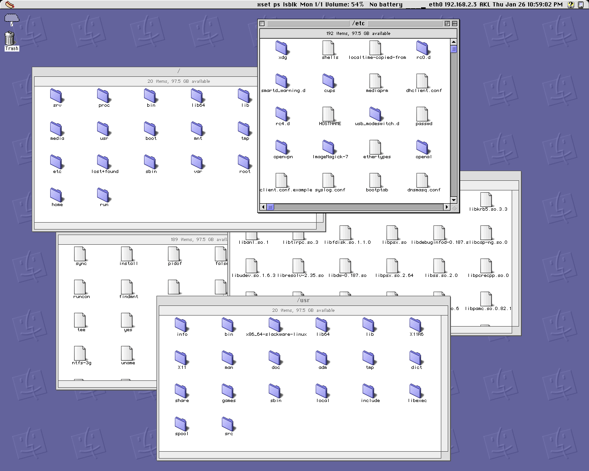

HOT DOG Linux
HOT DOG Linux
Download
Live Image Based on Alpine Linux - Run With QEMU
Archive.org
Source Code
Github
Overview
The design goals of HOT DOG Linux include:
- Graphical user interface based on retro computer systems including Windows 3.1 Hot Dog Stand, Amiga Workbench, Atari ST GEM, and Classic Mac
- Custom lightweight Objective-C foundation
- Bitmapped graphics, low DPI displays
- No Unicode support by design
HOT DOG Linux uses a custom lightweight Objective-C foundation on top of the GCC Objective-C runtime. The style of Objective-C is completely different from the one Apple uses, everything is basically id.
By design, Unicode is not supported.
Low DPI displays are preferred, since the graphics are bitmapped and fixed in size. The preferred aspect ratio for HOT DOG Linux is 4:3.
HOT DOG Linux does not use Automatic Reference Counting. It causes problems with type-checking during compilation (it is too strict).
HOT DOG Linux is an acronym that stands for Horrible Obsolete Typeface and Dreadful Onscreen Graphics for Linux.
Screenshots
Windows 3.1 Screenshot

Amiga Screenshot

Atari ST Screenshot

Mac Classic Screenshot

Mac Color Screenshot

Mac Platinum Screenshot

How to compile and run
$ sh makeUtils.sh $ perl build.pl To run the window manager: $ ./hotdog runWindowManager To run the iPod style interface: $ ./hotdog
Dependencies
The following executables must be in your PATH or at location if specified:
- xrandr
- ifconfig (used by Utils/printNetworkInfo)
- find (used by build.pl)
- gcc
- /usr/bin/perl
- /bin/bash (used by Utils/printDateEverySecondForTimezone:text:)
- date (used by Utils/printDateEverySecondForTimezone:text:)
(this list might be incomplete)
The following libraries must have headers available and be linkable:
- libX11
- libXext
- libXfixes
- libGL (Mesa should work)
- libm
- libobjc (GCC Runtime)
These are optional:
- xterm
- mpv
- mupdf (used by Config/fileHandlers.csv)
- firefox (used by Config/rootWindowMenu.csv and Config/fileHandlers.csv)
- thunderbird (used by Config/rootWindowMenu.csv)
- x64 (used by Config/fileHandlers.csv)
- mupen64plus (used by Config/fileHandlers.csv)
(this list might be incomplete)
Legal
Copyright (c) 2020 Arthur Choung. All rights reserved.
Email: arthur -at- hotdoglinux.com
Released under the GNU General Public License, version 3.
For details on the license, refer to the LICENSE file.